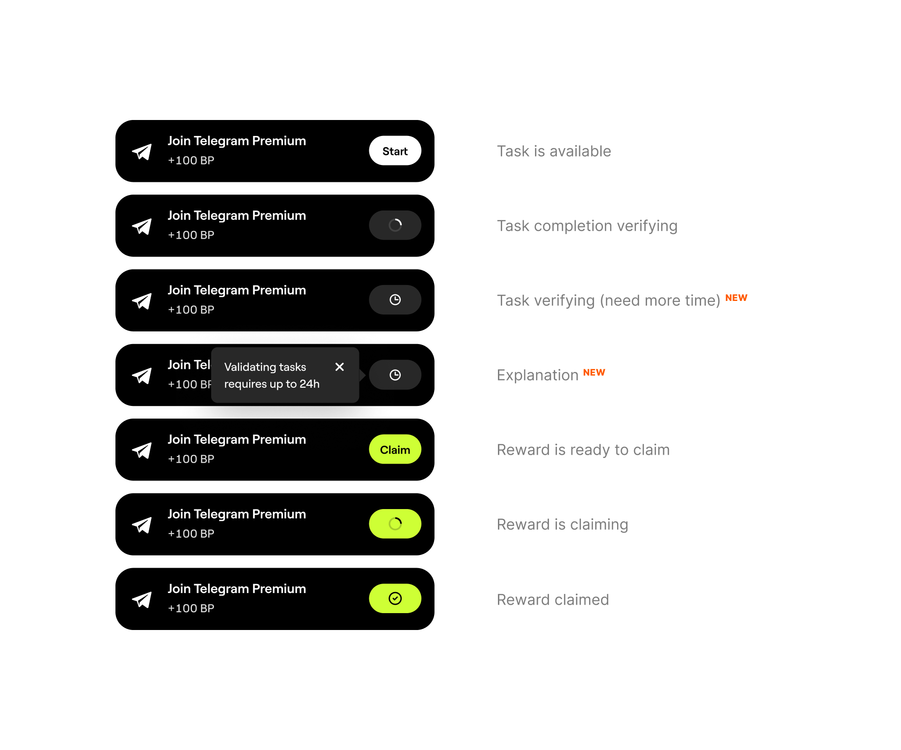

How a small icon in task statuses reduced support engineer workload from 70% → 15%.


Problem
Completed tasks took a long time to validate and the spinner users saw after completion could spin for up to 24 hours. Users worried they wouldn't get their reward and went to complain to support.

But we couldn't touch the backend — any small change turned into a multi-week cohort rollout (90M users is no joke)
The task was small, but no one took it on due to massive workload across all tracks + all designers were on vacation. Had to move fast. To save time, I started by cutting the unnecessary.

Solution options
Created about 7 solutions from design system patterns. Selected the most adequate: Banner appearing over tasks; popover on hover over changed icon; top notification and modal.

Testing
Of all options, only one didn't interrupt the main flow, didn't distract users from other actions, and appeared only on request. We tested it with a focus group, where 77% immediately understood what the icon meant (survey).

Color alternatives
We explored alternative color schemes, but bright tones looked odd for hints + some resembled errors.

Rolled out two solutions at once:
Now: if task verification took more than 7 seconds, we changed the spinner to a clock icon on the frontend + gave a hint on click.

Result
Share of tickets related to task completion verification was up to 75% among all support requests. We reduced it to 15%.
Task was done and rolled out to all users in 3 days.